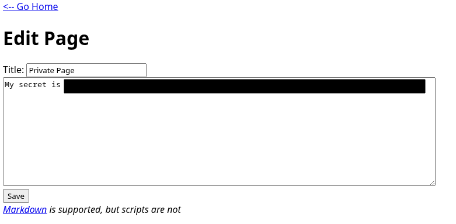
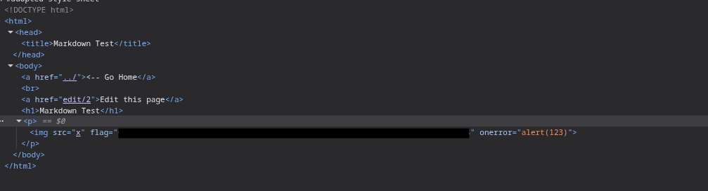
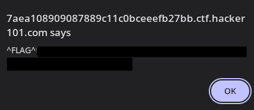
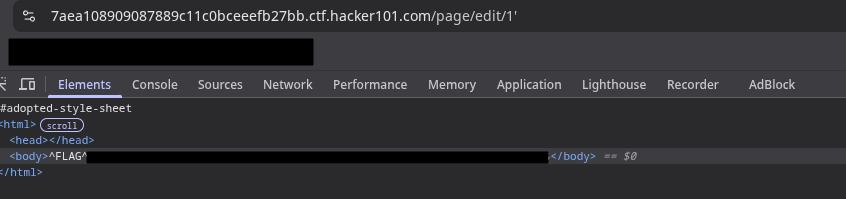

Target: Web Application • Difficulty: Easy
First step was checking for hidden or unlinked pages. The CMS uses a predictable
/page/<id> pattern:
https://<hash>.ctf.hacker101.com/page/1
https://<hash>.ctf.hacker101.com/page/2
https://<hash>.ctf.hacker101.com/page/3
https://<hash>.ctf.hacker101.com/page/4
Page /page/4 returns a 403 Forbidden response, indicating the resource exists
but is access-controlled.
Since direct viewing was blocked, the next logical step was testing the edit endpoint:
https://<hash>.ctf.hacker101.com/page/edit/4
The edit page is accessible without authentication. Opening it immediately reveals the first flag.
With write access confirmed, input handling was tested. A basic XSS payload was injected into the page body:
<img src="x" onerror="alert(123)">
The alert executes successfully, confirming stored XSS. Inspecting the page source reveals the second flag embedded in the HTML.
Since the body field was vulnerable, the title field was tested next using the same payload. The injection executes when the page is rendered.
This triggers the third flag.
The final test was direct manipulation of the edit URL. Injecting a single quote into the page ID parameter causes a backend error:
https://<hash>.ctf.hacker101.com/page/edit/1'
The application crashes and returns a database error page containing the final flag.
| Flag 1 | Unauthorized page edit |
|---|---|
| Flag 2 | Stored XSS (content) |
| Flag 3 | Stored XSS (title) |
| Flag 4 | SQL injection |
All actions performed in an authorized CTF environment.